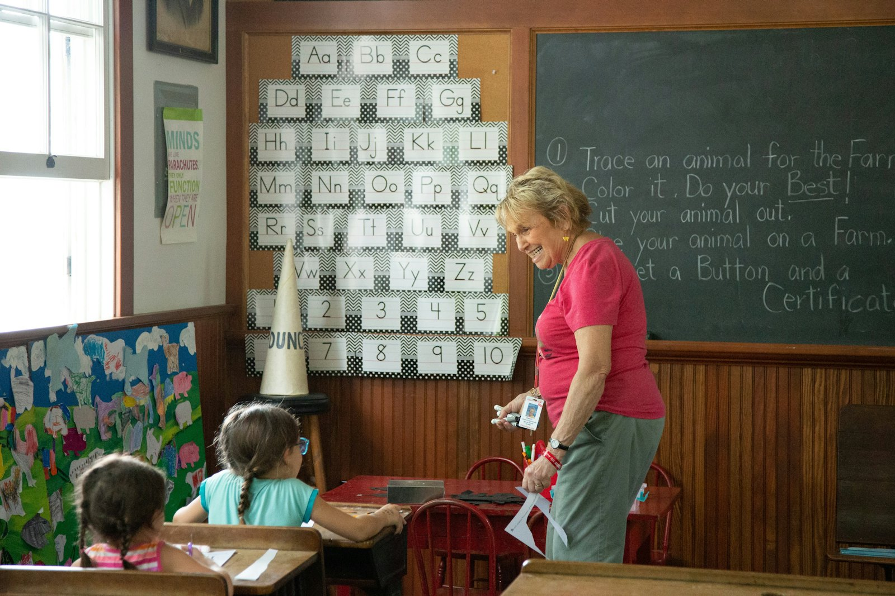

오시는 길
마곡나루역 3번 출구에서 걸어서 6분
오시는 길
국공립 바다솔빛어린이집
지도 자리입니다. 실제 서비스에서는 네이버 지도가 들어갑니다
- 주소
- 서울 강서구 마곡중앙로 00길 21
- 운영시간
- 평일 07:30-19:30, 토요일 07:30-15:30 사전 신청
- 휴원
- 일요일과 공휴일
- 상담 시간
- 평일 14:00-16:00
- 대중교통
- 9호선과 공항철도 마곡나루역 3번 출구 도보 6분
- 주차
- 단지 지상 방문자 주차 2면, 정문 앞 5분 정차 구역
등하원 안내
통학차량은 운행하지 않습니다.
단지 안에 있어 걸어서 등원하는 가정이 대부분입니다. 차로 오시면 정문 앞 5분 정차 구역을 쓰시고, 오래 대실 때는 단지 지상 방문자 주차면 두 곳을 이용하십시오. 등원은 9시까지, 하원은 16시부터 19시 30분 사이입니다.
입소 상담
전화로 아동 생년월을 확인한 뒤 견학 시간을 잡습니다.
- 01
전화 문의
아동 생년월과 희망 등원 시기를 확인합니다.
- 02
견학
평일 오후 두 시부터 네 시 사이 40분입니다.
- 03
서류와 등원
건강진단서와 예방접종 증명서를 내고 등원일을 정합니다.
온라인 문의
아동 생년월과 희망 등원 시기를 적어 주시면 해당 반 대기 상황을 확인해 회신합니다.
- 영유아보육법에 따라 강서구청에서 위탁받아 운영하는 국공립 어린이집입니다. 현재 위탁 기간은 2025년 3월부터 2028년 2월까지입니다.
- 보육료와 필요경비 수납액은 보건복지부 지원 단가와 서울특별시 고시 한도액을 따릅니다.
- 어린이집 안에 폐쇄회로 텔레비전 8대를 설치해 운영하며 영상은 60일 동안 보관합니다. 열람은 영유아보육법 제15조의5에 따른 절차로만 가능합니다.
- 인가 정원과 현원, 어린이집 평가 결과, 급식 식단은 어린이집정보공개포털에 공시합니다.
- 아동이 나오는 사진과 영상은 보호자 서면 동의를 받은 범위에서만 쓰며, 동의하지 않은 아동은 촬영에서 제외합니다. 학부모 후기는 싣지 않습니다.
- 이 사이트는 포트폴리오용 데모입니다. 상호와 연락처, 주소는 모두 가상입니다.